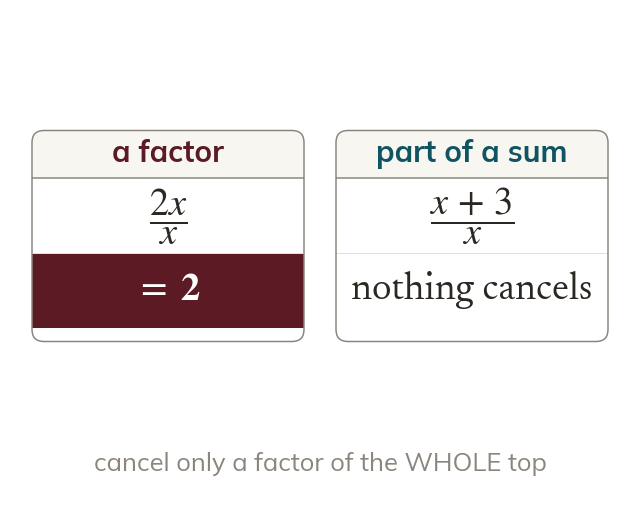

Cancelling only works with factors
Cancel only a factor of the whole top and the whole bottom. In the is only part of a sum. So nothing cancels.
A fraction simplifies by cancelling a factor that's common to both the numerator and the denominator - dividing top and bottom by the same thing. This only works when that common thing is a factor of the WHOLE numerator and the WHOLE denominator, not just part of a sum. In the in the denominator is not a factor of the numerator doesn't divide evenly by so nothing cancels, even though an appears in both - cancelling the x's here would be as wrong as saying simplifies to